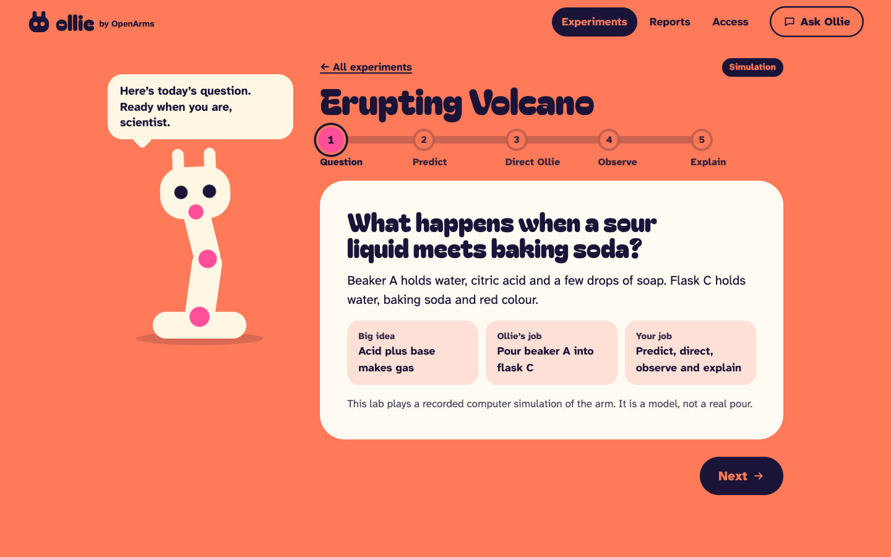

A robot lab partner for students
You’re the scientist.
Ollie’s the hands.
Some students understand the experiment and know what to test — but can’t reach, grip or pour the materials. OpenArms gives them a robot arm they direct with voice, text, a switch or eye gaze. Ollie proposes every action, shows the exact plan, and waits for a yes. Nothing moves without it.
- Built for limited hand and arm mobility
- WCAG 2.2 AA · keyboard, switch, gaze and voice paths
- Open source · runs locally
The userflow
One loop. The student stays in charge.
Every lab follows the same five steps. The student chooses the experiment, directs each action, and owns the conclusion — Ollie only supplies the hands.
- ★Report
A question, in the student’s words
Each lab opens with a real question — “What happens when a sour liquid meets baking soda?” The student reads it, hears it read aloud, or has Ollie explain it. No prior knowledge is assumed.
Student drives · Ollie assists
The interface
Built for hands that can’t hold a beaker
Every answer is available three ways: tap, keyboard, or speak. Big targets, no dragging, no timers, and everything works with the assistive technology the student already uses.

- 48 px minimum targets
- Keyboard-only operation
- Switch & eye-gaze ready
- Voice answers, read-aloud plans
- Reduced-motion support
- axe-core: 0 violations across 27 states
Watch it work
Recorded simulations
These clips are real MuJoCo physics simulations of the SO-101 arm on the lab bench — the same simulator the app runs. They are recordings, not live renders, and not physical hardware. The live version runs on your own machine; see Run it.
Run it yourself
The real simulation runs locally
This site is a showcase — nothing here is streamed live. The full app, simulator and lab protocol are open source and run on your machine.
1 · Clone
git clone https://github.com/VictorJimenez3/OpenArms.git
cd OpenArms2 · Environment
uv venv --python 3.12 .venv-lab
uv pip install --python .venv-lab/bin/python \
-r agentic/requirements-lab.txt \
mujoco==4.0.1 scipy pyyaml pillow \
imageio imageio-ffmpeg pandas pyarrow \
anthropic==2.8.0 pytest pytest-asyncioFor the physical SO-101 arm add LeRobot/lerobot[feetech] at the pinned commit — see HANDOFF.md.
3 · Launch
OPENARMS_EXECUTION=mujoco \
OPENARMS_SCENE=demo_bench \
OPENARMS_DEMO_EXPERIMENT=volcano \
PYTHONPATH=agentic:simulation:. \
.venv-lab/bin/python -m agentic.openarms_labThen open http://127.0.0.1:8000/student/. Voice needs a GEMINI_API_KEY in .env; typed play works without one.
What’s real, and what’s simulated
- Simulated (shown above): the arm, the liquids and the camera view are MuJoCo physics. Results are labelled “recorded simulation” in the app and on this page.
- Real software: the consent loop, the planner, the skill registry, the independent observer and Stop are the same code paths used on the bench.
- Physical arm: a supervised real-bench lane exists (
/bench) with camera checks, bounded replayed pours and operator confirmation. It has not completed a qualified physical pour — treat it as experimental, keep the power switch in reach. - No live AI on this page: this site is static. There is no chat, no API key and nothing to rate-limit — the AI planner and Gemini voice only run inside the local app.